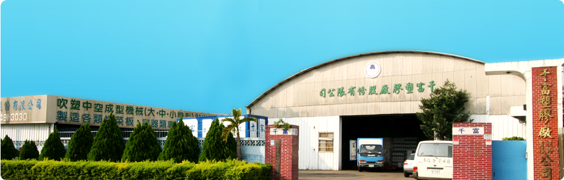
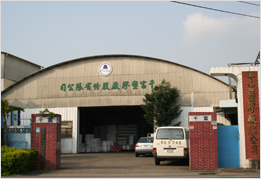
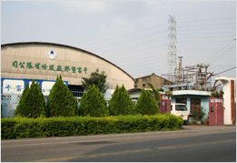
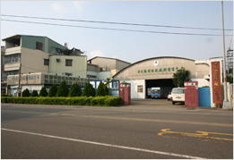

關於我們
創立於 1966 年，專門生產塑膠容器製品，並提供代客加工服務。
Company
千富塑膠廠股份有限公司
主要產品：礦泉水桶、化工桶、噴水器、各式油桶、水缸、便器等。
千富塑膠廠(股)公司創立於西元 1966 年，專門生產塑膠容器製品，1973 年改組由陳炎煌先生擔任董事長全方位領導至今。加工方面，承接外銷製造專業產品如運動器材、玩具、機油容器、汽車零件等。
本公司為了響應環保，於 2010 年合格通過 SGS 國家標準 CNS12221 號重金屬測試。為順應時代潮流，秉持不斷求新求進，以滿足市場需求，歡迎舊雨新知不吝指教。
自動化生產迅速的物流熱忱的服務堅持的品質市場的需求永續的經營

History
公司沿革
從一間傳統塑膠工廠，到今日的自動化容器製造與代工夥伴。
-
1966
千富塑膠廠(股)公司創立，專門生產塑膠容器製品。
-
1973
公司改組，由陳炎煌先生擔任董事長，全方位領導至今。
-
2010
響應環保，合格通過 SGS 國家標準 CNS12221 號重金屬測試；官方網站正式上線。
Gallery
公司介紹圖片集
位於台中大里的廠區與生產環境。


